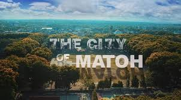
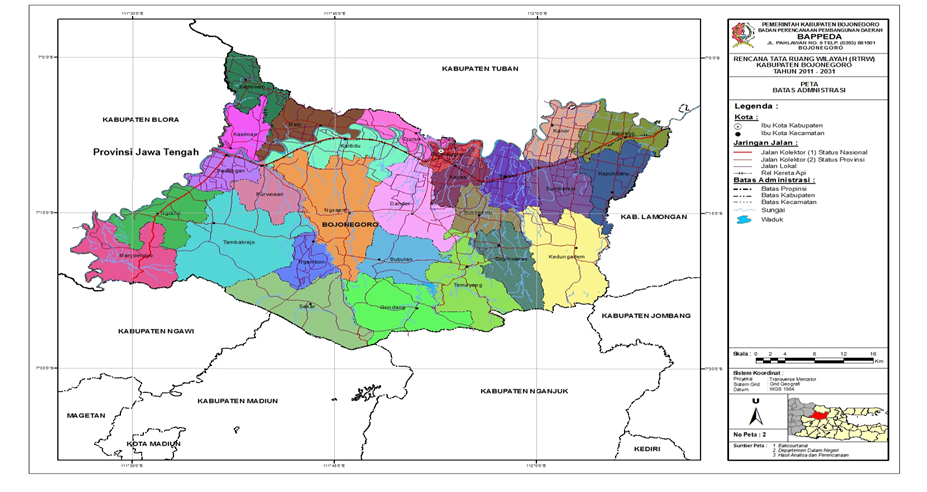
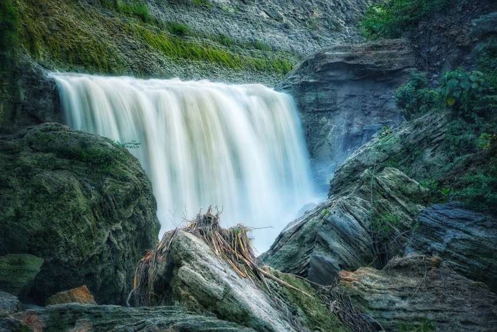
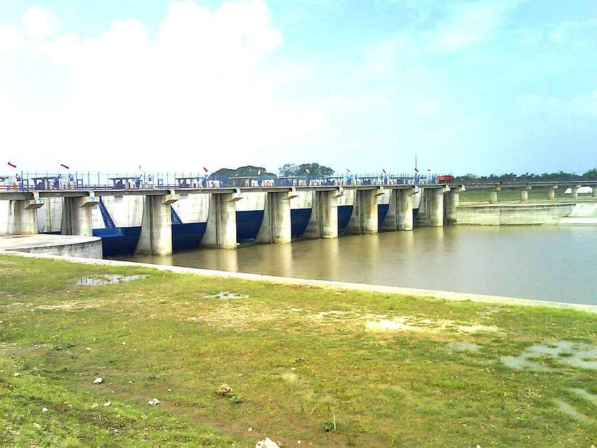
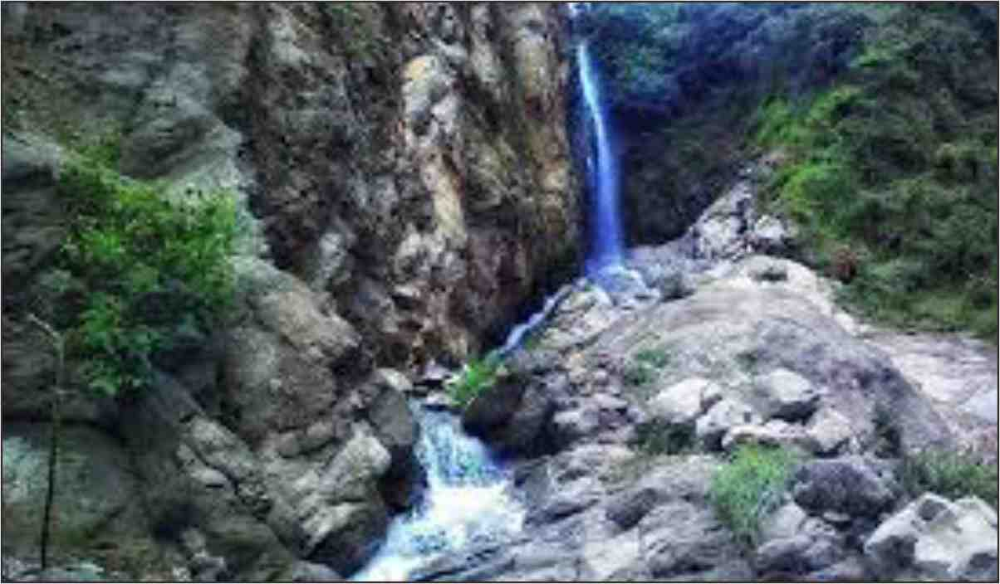
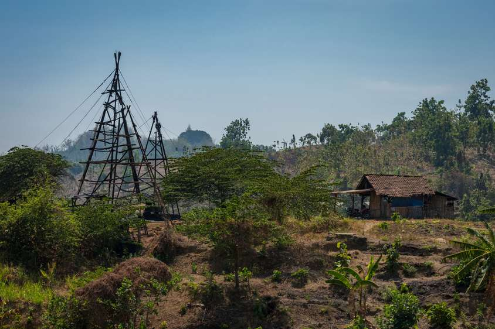
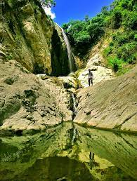
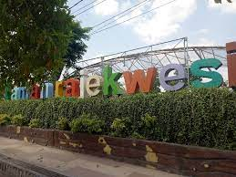
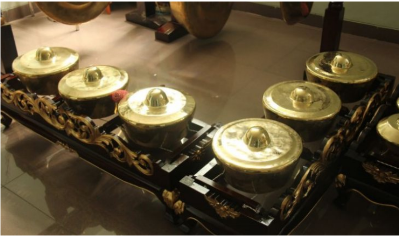

Pinarak Bojonegoro
Bumi Angkling Dharmo
Sejarah
Kata Bojonegoro merupakan salah satu kota yang ada provinsi Jawa Timur. Kota ini kaya akan minyak buminya sehingga disebut dengan kota minyak. Kenapa dinamakan Bojonegoro?Bojonegoro berasal dari kata boja berarti bersenang-senang dan negoro yang berarti negara. Jadi Bojonegoro dapat diartikan sebagai negara bersenang-senang atau berpesta. Setelah itu pemerintah Belanda mengangkat Djojonegoro sebagai Bupati Bojonegoro.
Kondisi dan letak Geografis
Kabupaten Bojonegoro, merupakan daerah yang berada di Wilayah Provinsi Jawa Timur, terletak pada posisi 60 59’ sampai 70 37’ Lintang Selatan dan 1120 25’ sampai 1120 09’ Bujur Timur, dengan jarak + 110 km dari ibu kota provinsi. Luas wilayah Kabupaten Bojonegoro adalah 230.706 ha dengan jumlah penduduk pada akhir Tahun 2018 1.311.042 jiwa, dan secara administratif memiliki batas wilayah yaitu sebelah Utara Kabupaten Tuban, sebelah Selatan Kabupaten Madiun, Nganjuk dan Jombang, Sebelah Timur Kabupaten Lamongan dan sebelah Barat Kabupaten Ngawi dan Kabupaten Blora (Provinsi Jawa Tengah). Pembagian Wilayah Kabupaten Bojonegoro terdiri dari 28 Kecamatan, meliputi 11 kelurahan dan 419 desa.
Wisata Bojonegoro
Bojonegoro adalah salah satu Kabupaten di Jawa Timur yang terkenal akan potensi wisata alam yang dimilikinya. Letak Bojonegoro sendiri berbatasan dengan Kabupaten Tuban, Nganjuk, Ngawi dan juga Blora. Hal ini menjadikan wilayah Bojonegoro semakin menarik untuk disinggahi. Ada bukit, waduk, air terjun, hingga taman bermain yang bisa kamu akses dengan harga terjangkau. Banyak juga tempat piknik tersembunyi di Bojonegoro yang sayang untuk kamu lewatkan. Penasaran ada destinasi wisata apa saja di kota kecil Jawa Timur yang satu ini?
Air Terjun Kedung Maor
Salah satu tempat wisata alam di Bojonegoro yang tersembunyi dan menarik untuk dikunjungi adalah Air Terjun Kedung Maor. Wisata ini sangat cocok untuk kamu nikmati di libur akhir pekan, spot anti-mainstream nan damai yang akan membuat kamu
merasa refreshed dari rasa penat dari suasana perkotaan yang bising dengan lalu lalang kendara
Lokasinya ada di Clebung, Bubulan, Area Hutan, Clebung, Bojonegoro, Kabupaten Bojonegoro, Jawa Timur 62172
Bendungan Gerak
Masih membahas tentang wisata alam dengan pemandangan air, Bojonegoro memiliki obyek wisata yang disebut dengan Bendungan Gerak. Daya tarik dari bendungan ini adalah aliran airnya yang membelah sungai Bengawan Solo.
Lokasinya ada di Kecamatan Trucuk, Kabupaten Bojonegoro, Jawa Timur.
Air terjun krodonan
 Air Terjun Krondonan menjadi salah satu obyek wisata alam di Bojonegoro yang wajib kamu kunjungi. Tempat ini berlokasi di sekitar daerah Desa Gondang. Pemandangan alamnya yang berupa tebing bebatuan berwarna putih memikat banyak hati para
pengunjungnya. Tidak heran apabila banyak wisatawan lokal maupun mancanegara mengunjungi tempat ini.
Lokasinya Lokasi: Desa Krondonan, Kecamatan Gondang, Kabupaten Bojonegoro, Jawa Timur.
Teksas Wonocolo
Teksas merupakan singkatan dari Tekad Selalu Aman dan Sejahtera. Tempat wisata Bojonegoro ini menjadi media edukasi yang cukup bermanfaat karena memberi wawasan tentang pengeboran minyak dengan cara tradisional. Mirip dengan Texas yang ada
di Amerika, tempat ini memiliki 250 sumur bor minyak bumi yang sudah tidak aktif.
Lokasinya Wonocolo, Kedewan, Kabupaten Bojonegoro, Jawa Timur 62164.
Negeri di Atas Angin Bojonegoro

Negeri di atas angin merupakan tempat wisata di Bojonegoro yang juga difavoritkan oleh anak muda setempat. Dari ketinggian sekitar 853 mdpl, kamu bisa menyaksikan keindahan alam di sekitar karena adanya pemandangan tak biasa. Pengunjung bisa
juga camping di Bukit Cinta yang menjadi destinasi wisata di unggulan disana.
LokasinyaLokasi: Atasangin, Deling, Sekar, Kabupaten Bojonegoro, Jawa Timur.
Wana Wisata Dander
Liburan bersama keluarga memang menyenangkan, apalagi dengan tempat menarik yang jarang kamu kunjungi. Salah satu tempat destinasi wisata di Bojonegoro terfavorit untuk liburan keluarga yaitu Wana Wisata Dander. Wisata yang satu ini memiliki
banyak spot menarik dan wahana seru yang siap memanjakan libur akhir pekan kamu dan keluarga di Bojonegoro.
LokasinyaLokasi: Alang - alang kemangi, Kecamatan Dander, Kabupaten Bojonegoro, Jawa Timur.
Air Terjun Kedung Gupit
obyek wisata Bojonegoro ini pun dianggap memberi kesan privat karena tidak banyak terjamah oleh banyak orang. Air Terjun Kedung Gupit juga sering di sebut sebagai Air Terjun Krondonan oleh warga sekitar. Jika kamu ingin berkunjung ke Air Terjun
Kedung Gupit, dari pusat Kota Bojonegoro bisa menempuh perjalanan darat sekitar 2 sampai 3 jam, dengan jarak tempuh sekitar 50 km. Untuk masuk ke tempat ini kamu tidak perlu membayar retribusi dan kamu bisa berkunjung kapan saja.
Lokasinya Dusun Gayam, Desa Klino, Kecamatan Sekar, Kabupaten Bojonegoro, Jawa Timur 62167.
Waduk Grobogan

Liburan bersama keluarga memang menyenangkan, apalagi dengan tempat menarik yang jarang kamu kunjungi. Salah satu tempat destinasi wisata di Bojonegoro terfavorit untuk liburan keluarga yaitu Wana Wisata Dander. Wisata yang satu ini memiliki
banyak spot menarik dan wahana seru yang siap memanjakan libur akhir pekan kamu dan keluarga di Bojonegoro.
LokasinyaBendo Lor, Bendo, Kecamatan Kapas, Kabupaten Bojonegoro, Jawa Timu
Taman Rajekwesi
Liburan bersama keluarga memang menyenangkan, apalagi dengan tempat menarik yang jarang kamu kunjungi. Salah satu tempat destinasi wisata di Bojonegoro terfavorit untuk liburan keluarga yaitu Wana Wisata Dander. Wisata yang satu ini memiliki
banyak spot menarik dan wahana seru yang siap memanjakan libur akhir pekan kamu dan keluarga di Bojonegoro.
LokasinyaJl. Rajekwesi Bojonegoro, Pondok Asri, Klangon, Kec. Bojonegoro, Kab. Bojonegoro, Jawa Timur.
Alat Musik Bojonegoro
Jengglong
Jengglong adalah alat musik tradisional Indonesia yang berasal berasal dari Bojonegoro. Sekilas, sebenarnya bentuk Jengglong amat menyerupai Gong. Hanya sesungguhnya Jengglong lebih kecil secara ukuran. Alat musik ini dimainkan bersama dengan langkah dipukul bersama batang pemukul khusus.